Verb code examples
2.1 ;_La_ (section 4.2.1)
- (2.1)
-
He[PRO] appeared[VBD;_La_] tall[ADJ] .[PUNC]
- (2.2)
-
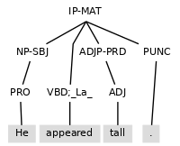
- (2.3)
-
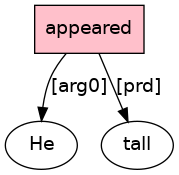
- (2.4)
-
It[PRO;_expletive_] is[BEP;_La_] cold[ADJ] .[PUNC]
- (2.5)
-
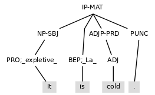
- (2.6)
-
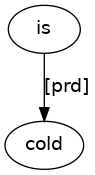
- (2.7)
-
He[PRO] was[BED;_La_] unable[ADJ;_cat_] to[TO] move[VB;_I_] .[PUNC]
- (2.8)
-
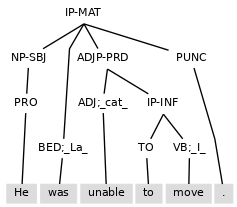
- (2.9)
-
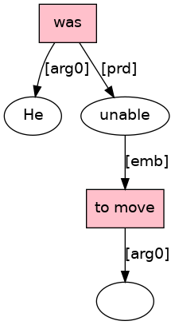
- (2.10)
-
How[WADV] annoying[ADJ] would[MD;_cat_Vi_] that[D;_nphd_] be[BE;_La_] ?[PUNC]
- (2.11)
-
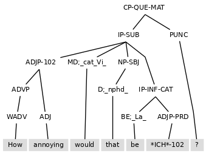
- (2.12)
-
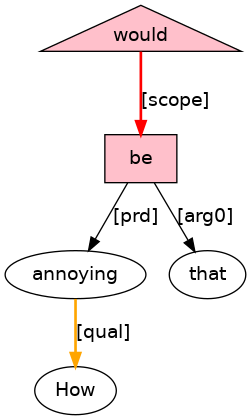
2.2 ;_Ln_ (section 4.2.2)
- (2.13)
-
I[PRO] thought[VBD;_Tf_] you[PRO] were[BED;_Ln_] a[D] burglar[N] ![PUNC]
- (2.14)
-
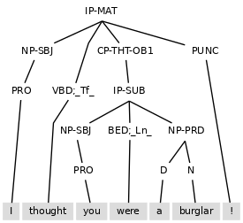
- (2.15)
-
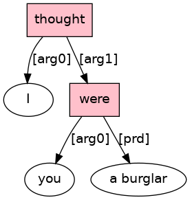
- (2.16)
-
It[PRO;_expletive_] was[BED;_Ln_] night[N] .[PUNC]
- (2.17)
-
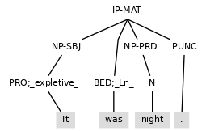
- (2.18)
-
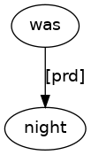
- (2.19)
-
the[D] man[N] I[PRO] thought[VBD;_Tf_] you[PRO] were[BED;_Ln_]
- (2.20)
-
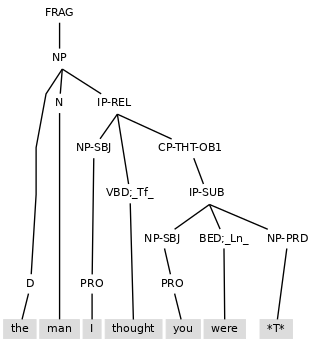
- (2.21)
-
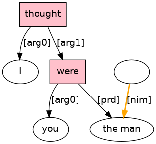
2.3 ;_I_ (section 4.3.1)
- (2.22)
-
He[PRO] smiled[VBD;_I_] .[PUNC]
- (2.23)
-
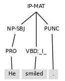
- (2.24)
-
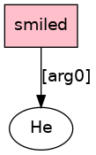
- (2.25)
-
It[PRO;_expletive_] rained[VBD;_I_] .[PUNC]
- (2.26)
-
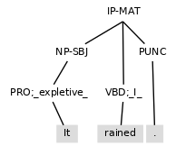
- (2.27)
-
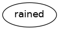
2.4 ;_Ip_ (section 4.3.2)
- (2.28)
-
Nasha[NPR] looked[VBD;_Ip_] back[RP] .[PUNC]
- (2.29)
-
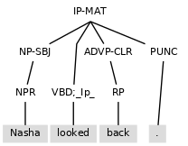
- (2.30)
-
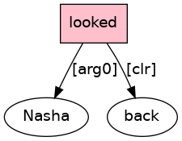
- (2.31)
-
the[D] place[N] where[RADV] you[PRO] are[BEP;_cat_Vg_] standing[VAG;_Ip_]
- (2.32)
-
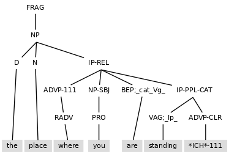
- (2.33)
-
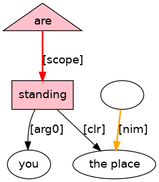
2.5 ;_Ipr_ (section 4.3.3)
- (2.34)
-
They[PRO] went[VBD;_Ipr_] to[P-ROLE] bed[N] .[PUNC]
- (2.35)
-
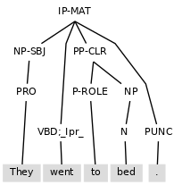
- (2.36)
-
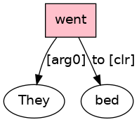
- (2.37)
-
a[D] place[N] that[C] they[PRO] all[ADV] went[VBD;_Ipr_] to[P-ROLE]
- (2.38)
-
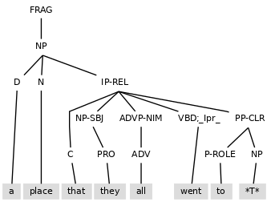
- (2.39)
-
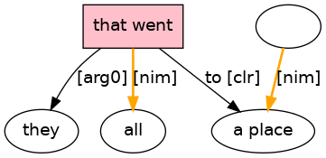
- (2.40)
-
leaks[NS] through[P-ROLE] which[RPRO] the[D] precious[ADJ] air[N] was[BED;_cat_Vg_] rushing[VAG;_Ipr_]
- (2.41)
-
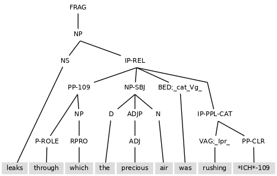
- (2.42)
-
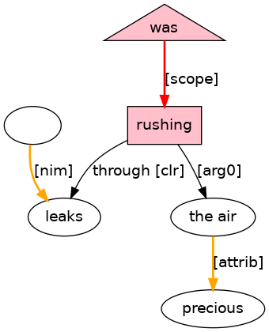
- (2.43)
-
These[D;_nphd_] are[BEP;_cat_VePASS_] looked[VVN;_Ipr_] after[P-ROLE] .[PUNC]
- (2.44)
-
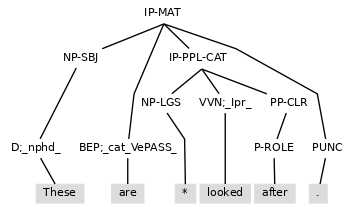
- (2.45)
-
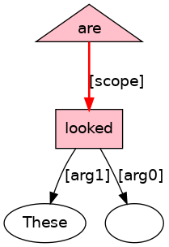
2.6 ;_In/pr_ (section 4.3.4)
- (2.46)
-
We[PRO] stayed[VBD;_In/pr_] a[D] fortnight[N] .[PUNC]
- (2.47)
-
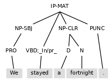
- (2.48)
-
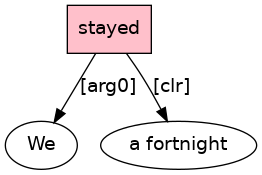
- (2.49)
-
We[PRO] stayed[VBD;_In/pr_] for[P-ROLE] a[D] fortnight[N] .[PUNC]
- (2.50)
-
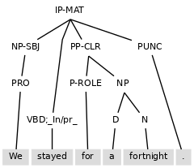
- (2.51)
-
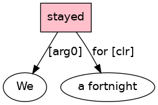
2.7 ;_It_ (section 4.3.5)
- (2.52)
-
They[PRO] came[VBD;_It_] to[TO] conquer[VB;_I_] .[PUNC]
- (2.53)
-
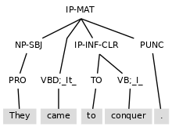
- (2.54)
-
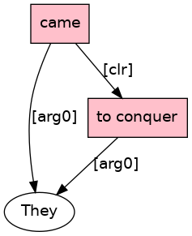
- (2.55)
-
We[PRO] waited[VBD;_It_] for[P-CONN] it[PRO;_expletive_] to[TO] rain[VB;_I_] .[PUNC]
- (2.56)
-
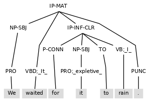
- (2.57)
-
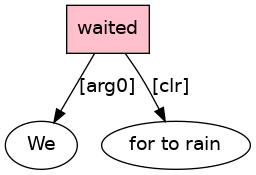
2.8 ;_Tn_ (section 4.4.1)
- (2.58)
-
The[D] teacher[N] scolded[VBD;_Tn_] John[NPR] .[PUNC]
- (2.59)
-
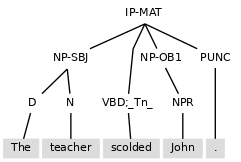
- (2.60)
-
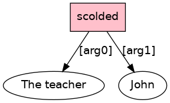
- (2.61)
-
a[D] student[N] who[RPRO] the[D] teacher[N] scolded[VBD;_Tn_]
- (2.62)
-
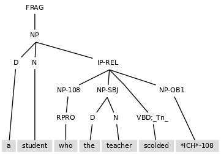
- (2.63)
-
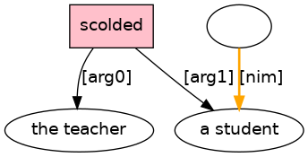
- (2.64)
-
John[NPR] was[BED;_cat_VePASS_] scolded[VVN;_Tn_] .[PUNC]
- (2.65)
-
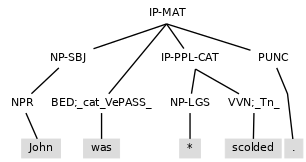
- (2.66)
-
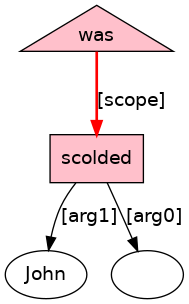
- (2.67)
-
John[NPR] was[BED;_cat_VePASS_] scolded[VVN;_Tn_] by[P-ROLE;_lgs_] the[D] teacher[N] .[PUNC]
- (2.68)
-
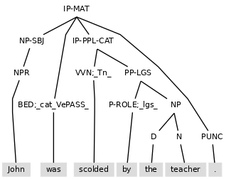
- (2.69)
-
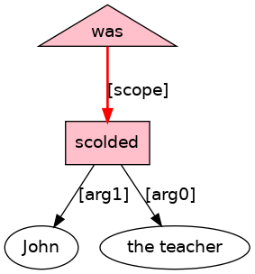
2.9 ;_Tn.p_ (section 4.4.2)
- (2.70)
-
Susan[NPR] turned[VBD;_Tn.p_] the[D] gas[N] on[RP] .[PUNC]
- (2.71)
-
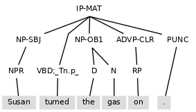
- (2.72)
-
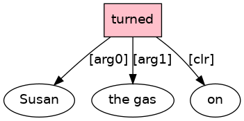
- (2.73)
-
I[PRO] sucked[VBD;_Tn.p_] in[RP] my[PRO;_genm_] breath[N] .[PUNC]
- (2.74)
-
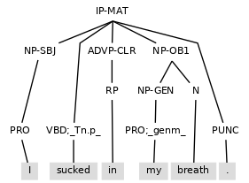
- (2.75)
-
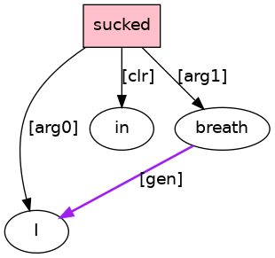
- (2.76)
-
more[ADJR] stuff[N] to[TO] put[VB;_Tn.p_] in[RP]
- (2.77)
-
- (2.78)
-
- (2.79)
-
I[PRO] wonder[VBP;_Tw_] where[WADV] she[PRO] <apos>s[HVP;_cat_Ve_] hidden[VVN;_Tn.p_] the[D] treasure[N] .[PUNC]
- (2.80)
-
- (2.81)
-
- (2.82)
-
I[PRO] wonder[VBP;_Tw_] how[WADV] she[PRO] acquired[VBD;_Tn_] and[CONJ] where[WADV] she[PRO] <apos>s[HVP;_cat_Ve_] hidden[VVN;_Tn.p_] , [PUNC] the[D] treasure[N] .[PUNC]
- (2.83)
-
- (2.84)
-
- (2.85)
-
The[D] straw[N] was[BED;_cat_VePASS_] peeled[VVN;_Tn.p_] off[RP] .[PUNC]
- (2.86)
-
- (2.87)
-
- (2.88)
-
I[PRO] wonder[VBP;_Tw_] where[WADV] the[D] treasure[N] was[BED;_cat_VePASS_] hidden[VVN;_Tn.p_] .[PUNC]
- (2.89)
-
- (2.90)
-
2.10 ;_Tn.pr_ (section 4.4.3)
- (2.91)
-
It[PRO] filled[VBD;_Tn.pr_] me[PRO] with[P-ROLE] fear[N] .[PUNC]
- (2.92)
-
- (2.93)
-
- (2.94)
-
taskW[NPR] runs[VBP;_Tn.pr_] in[P-ROLE] a[D] taskwindow[N] an[D] executable[N] .[PUNC]
- (2.95)
-
- (2.96)
-
- (2.97)
-
I[PRO] leave[VBP;_Tn.pr_] it[PRO;_provisional_] to[P-ROLE] you[PRO] to[TO] decide[VB;_I_] .[PUNC]
- (2.98)
-
- (2.99)
-
- (2.100)
-
the[D] people[NS] who[RPRO] I[PRO] take[VBP;_Tn.pr_] items[N] over_to[P-ROLE]
- (2.101)
-
- (2.102)
-
- (2.103)
-
the[D] people[NS] over_to[P-ROLE] who[RPRO] I[PRO] take[VBP;_Tn.pr_] items[N]
- (2.104)
-
- (2.105)
-

- (2.106)
-
items[NS] which[RPRO] I[PRO] take[VBP;_Tn.pr_] over_to[P-ROLE] my[PRO;_genm_] mother[N]
- (2.107)
-
- (2.108)
-
- (2.109)
-
Two[N] certificates[NS] are[BEP;_cat_VePASS_] pinned[VVN;_Tn.pr_] on[P-ROLE] the[D] wall[N] .[PUNC]
- (2.110)
-
- (2.111)
-
- (2.112)
-
the[D] diet[N] he[PRO] was[BED;_cat_VePASS_] put[VVN;_Tn.pr_] on[P-ROLE]
- (2.113)
-
- (2.114)
-

- (2.115)
-
the[D] diet[N] on[P-ROLE] which[RPRO] he[PRO] was[BED;_cat_VePASS_] put[VVN;_Tn.pr_]
- (2.116)
-
- (2.117)
-
- (2.118)
-
He[PRO] was[BED;_cat_VePASS_] put[VVN;_Tn.pr_] by[P-ROLE;_lgs_] the[D] doctor[N] on[P-ROLE] a[D] diet[N] .[PUNC]
- (2.119)
-
- (2.120)
-
2.11 ;_Tf_ (section 4.4.4)
- (2.121)
-
What[WPRO] do[DOP] you[PRO] suppose[VB;_Tf_] an[D] exploring[N] party[N] would[MD;_cat_Vi_] find[VB;_Tn_] ?[PUNC]
- (2.122)
-
- (2.123)
-
2.12 ;_Tw_ (section 4.4.5)
- (2.124)
-
A[D] parse[N] tells[VBP;_Tw_] how[WADV] information[N] flows[VBP;_Ipr_] through[P-ROLE] structure[N] .[PUNC]
- (2.125)
-
- (2.126)
-
- (2.127)
-
I[PRO] do[DOP] n<apos>t[NEG;_clitic_] know[VB;_Tw_] what[WPRO] to[TO] do[DO;_Tn_] .[PUNC]
- (2.128)
-
- (2.129)
-
2.13 ;_Tr_ (section 4.4.6)
- (2.130)
-
I[PRO] said[VBD;_Tr_] <ldquo>[PULQ] I[PRO] <apos>m[BEP;_cat_Vg_] going[VAG;_Ipr_] to[P-ROLE] bed[N] .[PUNC] <rdquo>[PURQ] .[PUNC]
- (2.131)
-
- (2.132)
-
- (2.133)
-
<ldquo>[PULQ] A[D] paradox[N] .[PUNC] <rdquo>[PURQ] , [PUNC] Nasha[NPR] said[VBD;_Tr_] .[PUNC]
- (2.134)
-
- (2.135)
-
2.14 ;_Tt_ (section 4.4.7)
- (2.136)
-
We[PRO] had[HVD;_cat_Ve_] planned[VVN;_Tt_] to[TO] meet[VB;_I_] .[PUNC]
- (2.137)
-
- (2.138)
-
2.15 ;_Tnt_ (section 4.4.8)
- (2.139)
-
They[PRO] allowed[VBD;_Tnt_] no[Q] building[N] to[TO] be[BE;_cat_VePASS_] erected[VVN;_Tn_] .[PUNC]
- (2.140)
-
- (2.141)
-
- (2.142)
-
John[NPR] needed[VBD;_Tnt_] it[PRO;_expletive_] to[TO] rain[VB;_I_] .[PUNC]
- (2.143)
-
- (2.144)
-
- (2.145)
-
something[D;_nphd_] which[RPRO] he[PRO] believes[VBP;_Tnt_] to[TO] be[BE;_La_] correct[ADJ]
- (2.146)
-
- (2.147)
-
- (2.148)
-
No[Q] building[N] was[BED;_cat_VePASS_] allowed[VVN;_Tnt_] to[TO] be[BE;_cat_VePASS_] erected[VVN;_Tn_] .[PUNC]
- (2.149)
-
- (2.150)
-
- (2.151)
-
This[D] place[N] is[BEP;_cat_VePASS_] believed[VVN;_Tnt_] by[P-ROLE;_lgs_] the[D] pirates[NS] to[TO] be[BE;_La_] safe[ADJ] .[PUNC]
- (2.152)
-
- (2.153)
-
- (2.154)
-
Kim[NPR] expected[VBD;_Tnt_] it[PRO;_provisional_] to[TO] be[BE;_La_] easy[ADJ] to[TO] impress[VB;_Tn_] Sandy[NPR] .[PUNC]
- (2.155)
-
- (2.156)
-
- (2.157)
-
Some[D] geologists[NS] believe[VBP;_Tnt_] there[EX] to[TO] be[BE;_ex_Vpr_] oil[N] in[P-ROLE] Brooklyn[NPR] .[PUNC]
- (2.158)
-
- (2.159)
-
- (2.160)
-
There[EX] is[BEP;_cat_VePASS_] believed[VVN;_Tnt_] by[P-ROLE;_lgs_] some[D] geologists[NS] to[TO] be[BE;_ex_Vpr_] oil[N] in[P-ROLE] Brooklyn[NPR] .[PUNC]
- (2.161)
-
- (2.162)
-
2.16 ;_Tprt_ (section 4.4.9)
- (2.163)
-
We[PRO] depend[VBP;_Tprt_] on[P-ROLE] you[PRO] to[TO] come[VB;_I_] .[PUNC]
- (2.164)
-
- (2.165)
-
2.17 ;_Tni_ (section 4.4.10)
- (2.166)
-
You[PRO] can[MD;_cat_Vi_] see[VB;_Tni_] the[D] blood[N] run[VB;_Ipr_] from[P-ROLE] their[PRO;_genm_] face[N] .[PUNC]
- (2.167)
-
- (2.168)
-
- (2.169)
-
There[EX] is[BEP;_ex_V_] someone[D;_nphd_] whom[RPRO] Helen[NPR] saw[VBD;_Tni_] answer[VB;_Tn_] the[D] phone[N] .[PUNC]
- (2.170)
-
- (2.171)
-
2.18 ;_Tg_ (section 4.4.11)
- (2.172)
-
Stop[VB;_Tg_] shouting[VAG;_I_] .[PUNC]
- (2.173)
-
- (2.174)
-
2.19 ;_Tng_ (section 4.4.12)
- (2.175)
-
She[PRO] could[MD;_cat_Vi_] feel[VB;_Tng_] it[PRO;_expletive_] raining[VAG;_I_] .[PUNC]
- (2.176)
-
- (2.177)
-
- (2.178)
-
There[EX] is[BEP;_ex_V_] someone[D;_nphd_] whom[RPRO] Helen[NPR] saw[VBD;_Tng_] hoeing[VAG;_Tn_] onions[NS] .[PUNC]
- (2.179)
-
- (2.180)
-
- (2.181)
-
The[D] raiders[NS] can[MD;_cat_Vi_] be[BE;_cat_VePASS_] seen[VVN;_Tng_] hovering[VAG;_Ipr_] around[P-ROLE] the[D] surface[N] .[PUNC]
- (2.182)
-
- (2.183)
-
2.20 ;_Tsg_ (section 4.4.13)
- (2.184)
-
Do[DOP] n<apos>t[NEG;_clitic_] you[PRO] remember[VB;_Tsg_] my[PRO;_genm_] telling[VAG;_Dn.*_] you[PRO] ?[PUNC]
- (2.185)
-
- (2.186)
-
- (2.187)
-
Do[DOP] n<apos>t[NEG;_clitic_] you[PRO] remember[VB;_Tsg_] me[PRO] telling[VAG;_Dn.*_] you[PRO] ?[PUNC]
- (2.188)
-
- (2.189)
-
2.21 ;_Dn.n_ (section 4.5.1)
- (2.190)
-
He[PRO] gave[VBD;_Dn.n_] it[PRO] her[PRO] .[PUNC]
- (2.191)
-
- (2.192)
-
- (2.193)
-
Daddy[N] bought[VBD;_Dn.n_] me[PRO] a[D] new[ADJ] bike[N] .[PUNC]
- (2.194)
-
- (2.195)
-
- (2.196)
-
the[D] task[N] he;<PERSON>[PRO] set[VBD;_Dn.n_] himself;<PERSON>[PNX]
- (2.197)
-
- (2.198)
-
- (2.199)
-
We[PRO] were[BED;_cat_VePASS_] played[VVN;_Dn.n_] two[N] recordings[NS] .[PUNC]
- (2.200)
-
- (2.201)
-
- (2.202)
-
everything[Q;_nphd_] everyone[Q;_nphd_] has[HVP;_cat_Ve_] been[BEN;_cat_VePASS_] taught[VVN;_Dn.n_]
- (2.203)
-
- (2.204)
-
2.22 ;_Dn.f_ (section 4.5.2)
- (2.205)
-
That[D;_nphd_] is[BEP;_equ_Vw_] what[WPRO] the[D] advice[N] tells[VBP;_Dn.f_] us[PRO] we[PRO] must[MD;_cat_Vi_] do[DO;_Tn_] .[PUNC]
- (2.206)
-
- (2.207)
-
- (2.208)
-
We[PRO] got[VBD;_cat_VePASS_] told[VVN;_Dn.f_] that[C] the[D] laser[N] can[MD;_cat_Vi_] cut[VB;_Ipr_] through[P-ROLE] concrete[N] .[PUNC]
- (2.209)
-
- (2.210)
-
2.23 ;_Dn.w_ (section 4.5.3)
- (2.211)
-
My[PRO;_genm_] uncle[N] showed[VBD;_Dn.w_] me[PRO] how[WADV] to[TO] milk[VB;_Tn_] the[D] cows[NS] .[PUNC]
- (2.212)
-
- (2.213)
-
- (2.214)
-
We[PRO] were[BED;_cat_VePASS_] asked[VVN;_Dn.w_] if[WQ] we[PRO] believed[VBD;_Tn_] the[D] report[N] .[PUNC]
- (2.215)
-
- (2.216)
-
2.24 ;_Dn.r_ (section 4.5.4)
- (2.217)
-
She[PRO] asked[VBD;_Dn.r_] the[D] Prime[NPR] Minister[NPR] <ldquo>[PULQ] Is[BEP;_La_] it[PRO] true[ADJ] ?[PUNC] <rdquo>[PURQ] .[PUNC]
- (2.218)
-
- (2.219)
-
- (2.220)
-
The[D] Prime[NPR] Minister[NPR] was[BED;_cat_VePASS_] asked[VVN;_Dn.r_] <ldquo>[PULQ] Is[BEP;_La_] it[PRO] true[ADJ] ?[PUNC] <rdquo>[PURQ] .[PUNC]
- (2.221)
-
- (2.222)
-
2.25 ;_Dn.t_ (section 4.5.5)
- (2.223)
-
I[PRO] asked[VBD;_Dn.t_] Andrew[NPR] to[TO] have[HV;_Tn_] a[D] go[N] .[PUNC]
- (2.224)
-
- (2.225)
-
- (2.226)
-
I[PRO] have[HVP;_cat_Ve_] been[BEN;_cat_VePASS_] forbidden[VVN;_Dn.t_] to[TO] make[VB;_Tn_] anything[D;_nphd_] .[PUNC]
- (2.227)
-
- (2.228)
-
2.26 ;_Dn.*_ (section 4.5.6)
- (2.229)
-
I[PRO] did[DOD] tell[VB;_Dn.*_] you[PRO] .[PUNC]
- (2.230)
-
- (2.231)
-
2.27 ;_Dn.pr_ (section 4.5.7)
- (2.232)
-
Daddy[N] bought[VBD;_Dn.pr_] a[D] new[ADJ] bike[N] for[P-ROLE] me[PRO] .[PUNC]
- (2.233)
-
- (2.234)
-
- (2.235)
-
I[PRO] want[VBP;_Tt_] to[TO] say[VB;_Dn.pr_] to[P-ROLE] you[PRO] something[D;_nphd_] .[PUNC]
- (2.236)
-
- (2.237)
-
- (2.238)
-
the[D] maximum[ADJ] loan[N] that[C] the[D] state[N] could[MD;_cat_Vi_] make[VB;_Dn.pr_] to[P-ROLE] a[D] project[N]
- (2.239)
-
- (2.240)
-
- (2.241)
-
developers[NS] to[P-ROLE] who[RPRO] a[D] company[N] gives[VBP;_Dn.pr_] advice[N]
- (2.242)
-
- (2.243)
-
- (2.244)
-
developers[NS] that[C] a[D] company[N] gives[VBP;_Dn.pr_] advice[N] to[P-ROLE]
- (2.245)
-
- (2.246)
-
- (2.247)
-
Details[NS] are[BEP;_cat_VePASS_] sent[VVN;_Dn.pr_] to[P-ROLE] Head[N] Office[N] .[PUNC]
- (2.248)
-
- (2.249)
-
- (2.250)
-
developers[NS] to[P-ROLE] who[RPRO] advice[N] was[BED;_cat_VePASS_] given[VVN;_Dn.pr_]
- (2.251)
-
- (2.252)
-

- (2.253)
-
developers[NS] advice[N] was[BED;_cat_VePASS_] given[VVN;_Dn.pr_] to[P-ROLE]
- (2.254)
-
- (2.255)
-
2.28 ;_Dpr.f_ (section 4.5.8)
- (2.256)
-
We[PRO] did[DOD] n<apos>t[NEG;_clitic_] say[VB;_Dpr.f_] to[P-ROLE] the[D] man[N] that[C] we[PRO] were[BED;_La_] sorry[ADJ] .[PUNC]
- (2.257)
-
- (2.258)
-
2.29 ;_Dpr.r_ (section 4.5.9)
- (2.259)
-
She[PRO] said[VBD;_Dpr.r_] to[P-ROLE] me[PRO] <ldquo>[PULQ] Get[VB;_Ip_] up[RP] ![PUNC] <rdquo>[PURQ] .[PUNC]
- (2.260)
-
- (2.261)
-
2.30 ;_Cn.a_ (section 4.6.1)
- (2.262)
-
The[D] setting[ADJ] sun[N] painted[VBD;_Cn.a_] the[D] western[ADJ] sky[N] red[ADJ] .[PUNC]
- (2.263)
-
- (2.264)
-
- (2.265)
-
He[PRO] flung[VBD;_Cn.a_] open[ADJ] the[D] canopy[N] .[PUNC]
- (2.266)
-
- (2.267)
-
- (2.268)
-
her[PRO;_genm_] habits[NS] that[C] most[Q;_nphd_] would[MD;_cat_Vi_] find[VB;_Cn.a_] annoying[ADJ]
- (2.269)
-
- (2.270)
-
- (2.271)
-
A[D] map[N] makes[VBP;_Cn.a_] it[PRO;_provisional_] easier[ADJR] to[TO] find[VB;_Tn_] your[PRO;_genm_] way[N] .[PUNC]
- (2.272)
-
- (2.273)
-

- (2.274)
-
A[D] map[N] makes[VBP;_Cn.a_] your[PRO;_genm_] way[N] easier[ADJR] to[TO] find[VB;_Tn_] .[PUNC]
- (2.275)
-
- (2.276)
-
- (2.277)
-
What[WPRO] did[DOD] you[PRO] find[VB;_Cn.a_] difficult[ADJ] to[TO] believe[VB;_Tn_] ?[PUNC]
- (2.278)
-
- (2.279)
-
- (2.280)
-
The[D] western[ADJ] sky[N] was[BED;_cat_VePASS_] painted[VVN;_Cn.a_] red[ADJ] .[PUNC]
- (2.281)
-
- (2.282)
-
- (2.283)
-
This[D;_nphd_] was[BED;_cat_VePASS_] found[VVN;_Cn.a_] difficult[ADJ] to[TO] believe[VB;_Tn_] .[PUNC]
- (2.284)
-
- (2.285)
-
2.31 ;_Cn.n_ (section 4.6.2)
- (2.286)
-
I[PRO] have[HVP;_cat_Ve_] made[VVN;_Cn.n_] it[PRO] mine[PRO;_ppge_] .[PUNC]
- (2.287)
-
- (2.288)
-
- (2.289)
-
Make[VB;_Cn.n_] it[PRO;_provisional_] a[D] rule[N] to[TO] get[VB;_Ip_] up[RP] .[PUNC]
- (2.290)
-
- (2.291)
-
- (2.292)
-
a[D] kitten[N] who[RPRO] we[PRO] called[VBD;_Cn.n_] Ruffels[NPR]
- (2.293)
-
- (2.294)
-
- (2.295)
-
The[D] kitten[N] was[BED;_cat_VePASS_] called[VVN;_Cn.n_] Ruffels[NPR] .[PUNC]
- (2.296)
-
- (2.297)
-
- (2.298)
-
What[WPRO] was[BED;_cat_VePASS_] the[D] city[N] called[VVN;_Cn.n_] ?[PUNC]
- (2.299)
-
- (2.300)
-
2.32 ;_Cn.n/a_ (section 4.6.3)
- (2.301)
-
They[PRO] accepted[VBD;_Cn.n/a_] it[PRO] as[P-ROLE] a[D] natural[ADJ] thing[N] .[PUNC]
- (2.302)
-
- (2.303)
-
- (2.304)
-
Solicitors[NS] regarded[VBD;_Cn.n/a_] the[D] rates[NS] as[P-ROLE] low[ADJ] .[PUNC]
- (2.305)
-
- (2.306)
-

- (2.307)
-
The[D] alliance[N] became[VBD;_cat_VePASS_] known[VVN;_Cn.n/a_] as[P-ROLE] the[D] Delian[NPR] League[NPR] .[PUNC]
- (2.308)
-
- (2.309)
-
- (2.310)
-
The[D] rates[NS] are[BEP;_cat_VePASS_] regarded[VVN;_Cn.n/a_] by[P-ROLE;_lgs_] solicitors[NS] as[P-ROLE] low[ADJ] .[PUNC]
- (2.311)
-
- (2.312)
-

2.33 ;_Cn.pr_ (section 4.6.4)
- (2.313)
-
Geoffrey;<GEOFFREY>[NPR] could[MD;_cat_Vi_] imagine[VB;_Cn.pr_] himself;<GEOFFREY>[PNX] in[P-ROLE] an[D] upper[ADJ] gallery[N] .[PUNC]
- (2.314)
-
- (2.315)
-
- (2.316)
-
Thorn[NPR] is[BEP;_cat_VePASS_] involved[VVN;_Cn.pr_] in[P-ROLE] parallel[ADJ] computing[N] .[PUNC]
- (2.317)
-
- (2.318)
-
2.34 ;_Cn.t_ (section 4.6.5)
- (2.319)
-
I[PRO] persuaded[VBD;_Cn.t_] it[PRO] to[TO] get[VB;_Ipr_] off[P-ROLE] me[PRO] .[PUNC]
- (2.320)
-
- (2.321)
-
- (2.322)
-
the[D] person[N] that[C] I[PRO] <apos>ll[MD;_cat_Vi_] get[VB;_Cn.t_] to[TO] do[DO;_Tn_] my[PRO;_genm_] dirty[ADJ] work[N]
- (2.323)
-
- (2.324)
-
- (2.325)
-
Such[ADJ] receptors[NS] are[BEP;_cat_VePASS_] thought[VVN;_Cn.t_] to[TO] be[BE;_Ln_] neurons[NS] .[PUNC]
- (2.326)
-
- (2.327)
-
2.35 ;_Cn.i_ (section 4.6.6)
- (2.328)
-
Let[VB;_Cn.i_] me[PRO] have[HV;_Tn_] a[D] go[N] .[PUNC]
- (2.329)
-
- (2.330)
-
2.36 ;_Cn.g_ (section 4.6.7)
- (2.331)
-
So[ADV] they[PRO] <apos>d[HVD;_cat_Ve_] got[VVN;_Cn.g_] a[D] ticking[ADJ] clock[N] running[VAG;_I_] .[PUNC]
- (2.332)
-
- (2.333)
-
- (2.334)
-
The[D] unit[N] was[BED;_cat_VePASS_] assumed[VVN;_Cn.g_] working[VAG;_I_] .[PUNC]
- (2.335)
-
- (2.336)
-
2.37 ;_VP24A_ (section 4.7.1)
- (2.337)
-
I[PRO] made[VBD;_VP24A_] him[PRO] obliged[VVN;_Tn.pr_] to[P-ROLE] me[PRO] .[PUNC]
- (2.338)
-
- (2.339)
-
- (2.340)
-
A[D] prominent[ADJ] journalist[N] was[BED;_cat_VePASS_] found[VVN;_VP24A_] shot[VVN;_Cn.a_] dead[ADJ] .[PUNC]
- (2.341)
-
- (2.342)
-
2.38 ;_VP24B_ (section 4.7.2)
- (2.343)
-
I[PRO] <apos>d[HVD;_cat_Ve_] had[HVN;_VP24B_] a[D] novel[N] published[VVN;_Tn_] .[PUNC]
- (2.344)
-
- (2.345)
-
2.39 ;_VP24C_ (section 4.7.3)
- (2.346)
-
I[PRO] <apos>ve[HVP;_cat_Ve_] got[VVN;_VP24C_] my[PRO;_genm_] hair[N] cut[VVN;_Tn_] .[PUNC]
- (2.347)
-
- (2.348)
-
2.40 ;_ex_V_ (section 4.8.1)
- (2.349)
-
There[EX] are[BEP;_ex_V_] other[ADJ] complications[NS] .[PUNC]
- (2.350)
-
- (2.351)
-
- (2.352)
-
How[WADV] many[ADJ] flats[NS] are[BEP;_ex_V_] there[EX] ?[PUNC]
- (2.353)
-
- (2.354)
-
2.41 ;_ex_Vp_ (section 4.8.2)
- (2.355)
-
There[EX] <apos>s[BEP;_ex_Vp_] nothing[Q;_nphd_] there[RP] .[PUNC]
- (2.356)
-
- (2.357)
-
- (2.358)
-
How[WADV] many[ADJ] flats[NS] are[BEP;_ex_Vp_] there[EX] here[RP] ?[PUNC]
- (2.359)
-
- (2.360)
-
2.42 ;_ex_Vpr_ (section 4.8.3)
- (2.361)
-
There[EX] was[BED;_ex_Vpr_] open[ADJ] mockery[N] in[P-ROLE] his[PRO;_genm_] tone[N] .[PUNC]
- (2.362)
-
- (2.363)
-
2.43 ;_ex_cat_Vt_ (section 4.8.6)
- (2.364)
-
There[EX] is[BEP;_ex_cat_Vt_] no[Q] evidence[N] to[TO] prove[VB;_Tf_] Hollis[NPR] was[BED;_Ln_] a[D] Russian[ADJ] mole[N] .[PUNC]
- (2.365)
-
- (2.366)
-
2.44 ;_ex_cat_VtPASS_ (section 4.8.7)
- (2.367)
-
What[WPRO] is[BEP;_ex_cat_VtPASS_] there[EX] for[P-CONN] her[PRO] to[TO] do[DO;_Tn_] ?[PUNC]
- (2.368)
-
- (2.369)
-
2.45 ;_ex_cat_Vg_ (section 4.8.8)
- (2.370)
-
There[EX] <apos>s[BEP;_ex_cat_Vg_] a[D] bear[N] sitting[VAG;_Ipr_] in[P-ROLE] the[D] corner[N] .[PUNC]
- (2.371)
-
- (2.372)
-
2.46 ;_ex_cat_VePASS_ (section 4.8.9)
- (2.373)
-
There[EX] <apos>s[BEP;_ex_cat_VePASS_] something[D;_nphd_] inscribed[VVN;_Tn.pr_] on[P-ROLE] this[D;_nphd_] .[PUNC]
- (2.374)
-
- (2.375)
-
2.47 ;_equ_Vf_ (section 4.9.1)
- (2.376)
-
My[PRO;_genm_] excuse[N] was[BED;_equ_Vf_] that[C] I[PRO] had[HVD;_Tn_] lessons[NS] .[PUNC]
- (2.377)
-
- (2.378)
-
2.48 ;_equ_Vw_ (section 4.9.2)
- (2.379)
-
That[D;_nphd_] is[BEP;_equ_Vw_] how[WADV] I[PRO] learnt[VBD;_Tt_] to[TO] ride[VB;_I_] .[PUNC]
- (2.380)
-
- (2.381)
-
- (2.382)
-
Is[BEP;_equ_Vw_] that[D;_nphd_] what[WPRO] to[TO] say[VB;_Tn.pr_] to[P-ROLE] people[N] ?[PUNC]
- (2.383)
-
- (2.384)
-
2.49 ;_equ_Vt_ (section 4.9.3)
- (2.385)
-
This[D;_nphd_] is[BEP;_equ_Vt_] to[TO] give[VB;_Dn.n_] the[D] application[N] an[D] iconbar[N] menu[N] .[PUNC]
- (2.386)
-
- (2.387)
-
2.50 ;_equ_Vg_ (section 4.9.4)
- (2.388)
-
One[D;_nphd_] of[P-ROLE;_phrase_] my[PRO;_genm_] funny[ADJ] stories[NS] is[BEP;_equ_Vg_] trying[VAG;_cat_Vt_] to[TO] debug[VB;_Tn_] the[D] interface[N] .[PUNC]
- (2.389)
-
- (2.390)
-
- (2.391)
-
The[D] first[ADJ] thing[N] he[PRO] saw[VBD;_Tn_] was[BED;_equ_Vg_] Mr.[N] McGregor[NPR] hoeing[VAG;_Tn_] onions[NS] .[PUNC]
- (2.392)
-
- (2.393)
-
2.51 ;_cat_Vt_ (section 4.10.1)
- (2.394)
-
I[PRO] had[HVD;_cat_Vt_] to[TO] go[VB;_Ipr_] to[P-ROLE] Leeds[NPR] .[PUNC]
- (2.395)
-
- (2.396)
-
2.52 ;_cat_VtPASS_ (section 4.10.2)
- (2.397)
-
The[D] government[N] is[BEP;_cat_VtPASS_] to[TO] blame[VB;_Tn_] .[PUNC]
- (2.398)
-
- (2.399)
-
- (2.400)
-
One[D;_nphd_] is[BEP;_cat_VtPASS_] for[P-CONN] them[PRO] to[TO] sign[VB;_Tn_] and[CONJ] send[VB;_Tn.p_] back[RP] .[PUNC]
- (2.401)
-
- (2.402)
-
2.53 ;_cat_Vi_ (section 4.10.3)
- (2.403)
-
It[PRO] helped[VBD;_cat_Vi_] cut[VB;_Tn_] the[D] cost[N] .[PUNC]
- (2.404)
-
- (2.405)
-
2.54 ;_cat_Vg_ (section 4.10.4)
- (2.406)
-
They[PRO] stopped[VBD;_cat_Vg_] walking[VAG;_I_] .[PUNC]
- (2.407)
-
- (2.408)
-
2.55 ;_cat_VgPASS_ (section 4.10.5)
- (2.409)
-
His[PRO;_genm_] wounds[NS] need[VBP;_cat_VgPASS_] dressing[VAG;_Tn_] .[PUNC]
- (2.410)
-
- (2.411)
-
2.56 ;_cat_Ve_ (section 4.10.6)
- (2.412)
-
His[PRO;_genm_] expression[N] had[HVD;_cat_Ve_] changed[VVN;_I_] .[PUNC]
- (2.413)
-
- (2.414)
-
2.57 ;_cat_VePASS_ (section 4.10.7)
- (2.415)
-
His[PRO;_genm_] expression[N] was[BED;_cat_VePASS_] changed[VVN;_Tn_] .[PUNC]
- (2.416)
-
- (2.417)
-